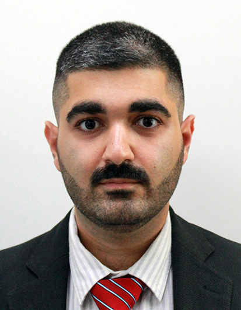

15+
Core contributors coordinated in Erasmus+ project execution.
Ph.D. Electrical Engineer
Ph.D. Electrical Engineer bridging legal metrology (auditing and certification), embedded systems, and data science. Experienced in international R&D consortiums (Erasmus+, HORIZON) and full-lifecycle product development from startup ideation to academic research.

Core contributors coordinated in Erasmus+ project execution.
Reduction in required test repetitions for VT/CT non-linear conditions.
Telemetry data collected from smart meter infrastructures.
Engineering throughput increase achieved as startup co-founder and CEO.
A/D circuit design (Altium, LTSpice), embedded systems (ARM Cortex M, Arduino), instrumentation (DAQ, DMMs, oscilloscopes, spectrum and logic analyzers), JCGM (GUM), characterization and calibration, ISO 9001, ISO/IEC 17025, IEC 61000, EN 50160, CEI TS 13:82-84, IEC 62052/53.
Python (scikit-learn, PyVISA, Pandas), MATLAB, NI LabVIEW/TestStand, C/C++, R, Node.js, SQL/No-SQL, supervised and unsupervised learning, timeseries forecasting, PCA, Monte Carlo simulation.
Agile (Jira, Trello), LEAN and Kaizen, R&D project management, cross-functional leadership, Git/GitLab, LaTeX, and public speaking.
Politecnico di Milano | Nov 2021 - May 2025 | Milan, Italy
Thesis: Data-driven approaches for anomaly detection in energy metering.
Politecnico di Milano | Sep 2019 - Oct 2021 | Milan, Italy
Thesis: Real-time motion capturing using inertial measurement units and embedded systems development.
Shahid Chamran University of Ahvaz | Sep 2013 - Jul 2018 | Ahvaz, Iran
Thesis: Embedded systems design for test automation in AgriTech.